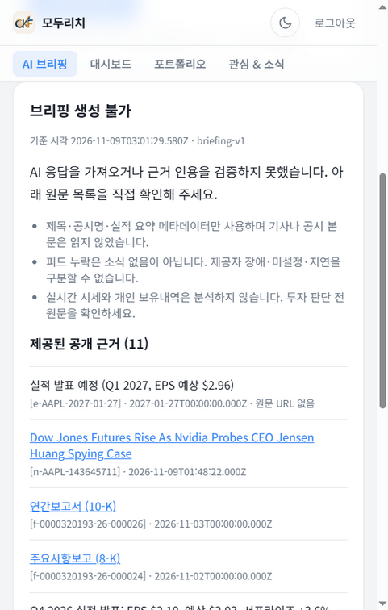
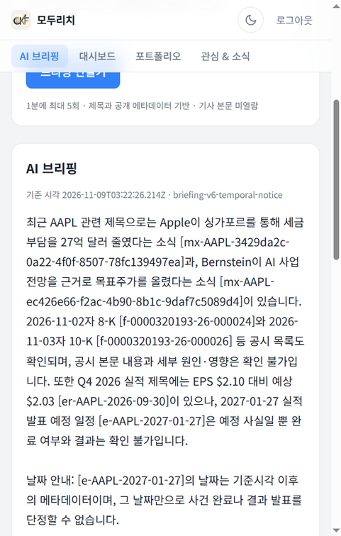
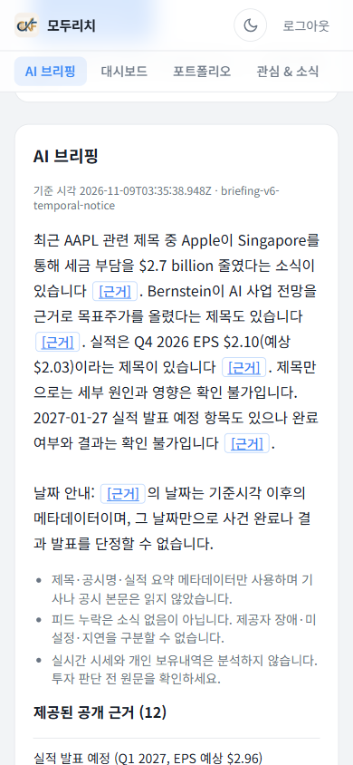
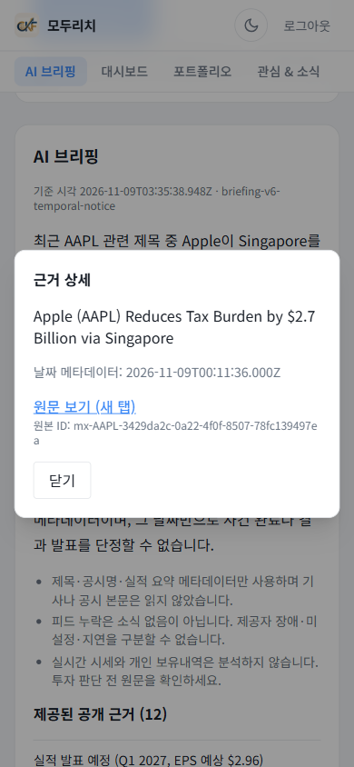

검토 후 보완 결과
2026-11-09 코디네이터가 반영했습니다. 아래 최초 검토 발견은 당시 상태로 보존했으며, 검토자가 수정본을 다시 승인한 것은 아닙니다.
- P1-1 · 반영: 최종 lint는 기존 오류 5개·export 경고 1개로 문서 정정. 동결 파일과 해시는 보존했습니다.
- P1-2 · 반영: REPORT 후보 표에 사용자 피드백·관련 trace·의견 1건의 분모·UI 단계와 후속 우선순위를 추가했습니다.
- P2-1~P2-4 · 반영: 현재 배포 버전, 잠재 오류 노출 여부·공개 재현 한계, 별도 AI 평가자·단일 차폐, 배포 누적 효과를 명시했습니다.
- P3-2~P3-4 · 반영: 미실행 사용자 로그 수집 계획, 화면의 공개 헤드라인 정책, Cloud Run 평가 범위를 추가했습니다.
- P3-1 · 선택적 후속: 모달 초기 focus는 원문 링크이며 Escape·포커스 복귀는 검증됐습니다. 제목이나 닫기 버튼으로 초기 focus를 바꾸는 제품 개선은 수행하지 않았습니다.
모델·배포본·동결 증거 변경 없음. 독립 검토 원문과 교정 기록 · 최종 REPORT.md
1. 루브릭 5항목 판정
판정 기준: 충족 공개 증거로 뒷받침되고 재검증에서 어긋남 없음 · 부분 일부 요소 누락 또는 해석 주의 · 미충족 증거 없음.
| # | 루브릭 | 판정 | 검토자가 확인한 근거 | 한계·비고 |
|---|---|---|---|---|
| 1 | 트레이스·피드백에서 문제 후보 3개 이상, 증거 trace와 반복 횟수 | ✓ 충족 한계 있음 | REPORT §2 후보 4종에 trace ID와 분모(19/19, 1/19, 1/19, 2/19). 다섯 trace가 q610-comparison.csv의 q610-01/10/15/13/18 baseline 행에 존재. 잠재 후보는 같은 CSV qualityReason에 "Latent raw …"로 주석. 상세 live-baseline-analysis.md. | 4종 중 3종은 baseline UI에 노출되지 않은 잠재 오류(보고서 명시). 후보 선정 시점 실사용자 피드백 0건. 배포 후 실사용자 의견 1건(긴 출처 ID)은 §6에서 UI로 처리됐으나 §2 표에는 없음 → 발견 P1-2. |
| 2 | 빈도·영향·수정 비용 비교와 첫 이슈 선택 근거 | ✓ 충족 | REPORT §3 표(빈도·영향·비용·선택). 19/19 native 추출 오류를 단일 수정 v2로 선택, 나머지는 후속 실험으로 분리. 선택 전 사전 기준이 live-baseline-analysis.md에 기록됨. | 영향·비용은 정성 판단(보고서 명시). |
| 3 | 문제·정상 사례를 함께 가진 데이터셋으로 전후 비교 | ✓ 충족 | 개발 20(정상 10/문제 10), hold-out 3세트 각 정상 5/문제 5를 공개 JSON에서 재집계. 사전 게이트(≥9/10·중대 0·정상 회귀 0·완전 쌍 10)가 protocol·final-gate.json에서 일치. 실패 v2·v3·v4·v5 보존, v6 hold-out v2 8/10→v6 10/10·정상 회귀 0을 맹검 기록에서 재계산. | 합성 입력, AI 분석자 판정(사람 평가 0), 버전당 1회, 표본 10~20. 맹검은 라벨 차폐만(출력 문체로 버전 추정 가능). |
| 4 | 배포 후 버전별 새 대화와 현상 건수 감소 | ✓ 충족 소표본 | gcloud로 6개 리비전·digest 확인. baseline 3건(v1, 모두 GENERATION_UNAVAILABLE)→candidate 3건(v6, 모두 ok). 검토자가 Cloud Logging에서 briefing_trace 7건·briefing_feedback 1건을 직접 조회해 공개 CSV/JSON과 trace·revision·status·durationMs 일치 확인. | n=3, AAPL 근거 11→12(hash 변경), asOf 상이. baseline 리비전은 v1 코드라 감소는 v2~v6 누적 효과. |
| 5 | REPORT.md에 과정과 결과 정리 | ✓ 충족 | REPORT.md 7개 절 존재, 상대 링크 113개 모두 유효, 공개 증거 41개 해시 일치. | 문서 불일치 2건(P1-1, P2-1). |
2. 보고서 7요건 판정
| # | 요건 | 판정 | 검토자가 확인한 근거 |
|---|---|---|---|
| 1 | 로그·피드백 건수와 직접 작성 대화 제작 방법 | ✓ 충족 | 서비스 183 / 모델 171(60/58+20/18+3/3+20/18+40/37+40/37 재합산 일치), 서로 다른 입력 50개, 원격 3+3+1 분리. 질문·근거·asOf 사전 고정, 호출마다 새 UUID. 실사용자 정성 1건과 운영자 투표 1건 구별(feedback summary). |
| 2 | 후보별 증상·증거·횟수·최초 분기 단계 | ✓ 충족 | REPORT §2 표에 증상·trace·분모·최초 문제 단계. 잠재 후보는 "잠재"로 표기. v3/v4에서 새로 관찰된 실패 유형도 분리 기록. |
| 3 | 선택 이슈와 빈도·영향·비용 표 | ✓ 충족 | REPORT §3 표. |
| 4 | 데이터셋 문제/정상 수, 통과 예시, 사전 출시 게이트 | ✓ 충족 | 통과 예시는 v4 실험 출력 발췌, v5·v6 사례 서술, 최종 답변 20건 전문. 게이트는 REPORT §4와 protocol JSON. |
| 5 | 수정 내용·실험(실패 포함)·실제 PR 링크 | ✓ 충족 | REPORT §5 표(v1→v2 … v5→v6, FAIL/PASS), 6개 동결 artifact 해시, PR #7과 커밋 해시. PR은 OPEN이며 승인·병합 아님(보고서도 동일 서술). |
| 6 | 배포 후 버전별 건수·지연·비용·스크린샷 | ✓ 충족 | 지연·비용 수치가 deployed-comparison.json과 CSV 재계산에 일치. 스크린샷 5장 유효, 화면의 asOf·버전·근거 수가 기록과 일치. |
| 7 | 회고와 향후 실사용자 로그·피드백 계획 | ✓ 충족 보완 권고 | REPORT §7 회고는 실제 관찰 기반. 향후 계획은 원칙 한 문단 → 발견 P3-2. |
3. 평가 지표: 로컬 합성 평가 (재집계)
모든 값은 q610-comparison.csv, v3·v4·v5·v6 개발 CSV, v5·v6 hold-out CSV에서 검토자가 다시 계산했으며 보고서 수치와 모두 일치했습니다. 입력은 전부 합성이고 판정은 AI 분석자 판정입니다.
개발 20건 수동 통과 수 (동일 입력, 버전별)
정상 회귀(baseline 통과→후보 실패): v3 5건(03·04·06·07·08), v4 2건(03·07), v5·v6 0건. v3 가용성 회귀 4건은 모두 정상 사례.
hold-out 10건 통과 수 (세트마다 새 입력)
v3·v4는 개발 게이트 실패로 hold-out을 실행하지 않았습니다(미평가). 세 세트는 서로 다른 입력이므로 세트 간 점수를 직접 비교하지 않습니다.
| 구간 | 서비스/모델 | input / output 토큰 | 추정 USD | 모델 호출 지연(중앙값 / p95·최대) | 판정 요약 |
|---|---|---|---|---|---|
| v1/v2 개발·hold-out | 60 / 58 | 28846 / 25812 | 0.0157906 | v1 개발 2514 / 4096ms · v2 개발 2754 / 4684ms | v2 hold-out 8/10 → FAIL |
| v3 개발 | 20 / 18 | 18557 / 10869 | 0.0072902 | 3367 / 4981ms | 12/20, 정상 회귀 5 → FAIL |
| v4 파일럿 + 개발 | 3 / 3 + 20 / 18 | 3978 / 373 + 23309 / 2157 | 0.0005843 + 0.0034094 | 1292 / 2127ms | 17/20, 정상 회귀 2 → FAIL |
| v5 개발 + hold-out | 40 / 37 | 47628 / 8514 | 0.0090198 | 개발 1434.5 / 4720ms · hold-out v5 1440 / 2084ms | 개발 20/20, hold-out 9/10이나 정상 회귀 1 → FAIL |
| v6 개발 + hold-out | 40 / 37 | 46837 / 9830 | 0.0095987 | 개발 1385.5 / 5320ms · hold-out v6 1376 / 1656ms | 개발 20/20, hold-out 10/10 → PASS |
| 로컬 누계 | 183 / 171 | — | 0.0456930 | — | 초기 smoke·계정 청구 제외(보고서 명시) |
4. 배포 지표: 실제 제공자 피드 (재집계·로그 대조)
같은 질문 3개(AAPL·MSFT·NVDA)를 baseline 리비전과 v6 리비전에서 각각 새 대화로 실행한 기록입니다. 질문은 코디네이터가 작성한 합성 평가 질문이고 근거는 배포 앱이 조회한 실제 제공자 메타데이터입니다(시장 사실성 미검증). 검토자는 Cloud Logging을 직접 읽어 7개 trace와 1개 피드백 이벤트가 공개 기록과 일치함을 확인했습니다.
| 종목 | 단계 | revision · 버전 | 상태 | 근거 수 | 서버 / 브라우저 ms | input / output | USD | 로그 결합 |
|---|---|---|---|---|---|---|---|---|
| AAPL | baseline | 00004-72l · briefing-v1 | unavailable | 11 | 9640 / 10501.8 | 1715 / 1000 | 0.0006715 | 일치 |
| candidate | v6-20261109 · v6-temporal-notice | ok | 12 | 5137 / 5570.7 | 2979 / 543 | 0.0005694 | 일치 · 근거 hash 변경 | |
| MSFT | baseline | 00004-72l · briefing-v1 | unavailable | 12 | 5908 / 6589.3 | 1981 / 1000 | 0.0006981 | 일치 |
| candidate | v6-20261109 · v6-temporal-notice | ok | 12 | 3554 / 3984.2 | 3004 / 497 | 0.0005489 | 일치 · 근거 hash 동일 | |
| NVDA | baseline | 00004-72l · briefing-v1 | unavailable | 12 | 5297 / 5602 | 2107 / 1000 | 0.0007107 | 일치 |
| candidate | v6-20261109 · v6-temporal-notice | ok | 12 | 3464 / 4197.9 | 3130 / 279 | 0.0004525 | 일치 · 근거 hash 동일 | |
| AAPL | UI smoke | v6-ui-20261109 · v6-temporal-notice | ok | 12 | 3961 / — | 2979 / 446 | 0.0005209 | 일치 · 쌍 비교와 분리 |
baseline 출력 토큰이 셋 다 정확히 1000(상한)이지만 native stop_reason은 수집되지 않아 truncation 여부를 단정하지 않습니다(보고서 명시). 검토자 gcloud 조회: 리비전 6개와 digest 일치, Cloud Build 405955c5…(03:14:13Z, v6 이미지)·0b3bf33e…(03:33:25Z, UI 이미지) SUCCESS, 런타임 LANGFUSE_ENABLED=false·BRIEFING_EVAL_MODE=false·provider anthropic·model claude-haiku-5-5·secret 4개 버전 1 고정.
5. 스크린샷 전·후 (정적 캡처, 검토자 판독)




다섯 번째 캡처 baseline-authenticated-form.png는 로그인 상태의 입력 폼이며 개인정보는 보이지 않습니다. 캡처에 보이는 제공자 헤드라인은 공개 뉴스 제목이지만 공개 CSV/JSON은 제목·URL을 제외했으므로 정책 문장을 맞추는 편이 좋습니다(P3-3).

6. 발견 사항 · 우선순위 · 상태
상태는 검토 시점(2026-11-09) 기준 초기 발견 · 미적용입니다. 코디네이터가 교정을 적용하면 final-review.md §9에 날짜와 함께 기록하고, 여기의 초기 판정은 그대로 둡니다. 현재 조치 상태는 검토 후 보완 결과를 확인하세요.
| ID | 우선순위 | 발견 | 근거 | 권고 | 상태 |
|---|---|---|---|---|---|
| P1-1 | 높음 · 문서 정정 | final-validation.md 최종 문장 "5 errors, 0 warnings"가 현재 트리와 다름. 검토자 실행은 오류 5·경고 1. | npx eslint . at a97527a. 경고는 tools/quest-evaluation/live/q604-final-export.mjs:6 미사용 변수 root. production 오류 5건은 문서와 동일 위치. | 문서에 "공개 export 스크립트 추가 후 경고 1건, production 오류 5 동일"을 추기. 코드 수정은 final-validation.json 해시 갱신이 따르므로 문서 추기를 권함. | 미적용 |
| P1-2 | 높음 · 루브릭 명시성 | 루브릭 1의 "피드백" 유래 후보가 §2 표에 없음. 실사용자 의견 1건(긴 출처 ID→근거 버튼)은 §6에만 서술. | REPORT §2 표 4행 모두 trace 유래. feedback summary realUserQualitative.count=1. | §2 표에 5번째 행 추가(출처 ID 가독성 · 사용자 의견 1건 03:27:11Z, 관련 trace b7e3c76e… · 1/1 · UI 표시 단계 · 수정 작음, v6-ui로 배포). §2 서두에 "선정 시점 실사용자 피드백 0건" 명시. | 미적용 |
| P2-1 | 중간 · 현재 상태 | REPORT §6 서두는 v6-20261109 100% 트래픽을 서술하지만 현재 100%는 v6-ui-20261109(digest 13567eff…). | gcloud run services describe traffic. | §6 첫 문단에 "현재 라이브 리비전: v6-ui-20261109(UI만 변경, 추론 동일)" 한 줄 추가. | 미적용 |
| P2-2 | 중간 · 해석 보조 | 후보 4종 중 3종이 미노출 잠재 오류라는 점이 표에는 없음. 잠재 후보 원문은 비공개라 공개 파일에서는 CSV 주석·발췌로만 확인. | q610-comparison.csv qualityReason, live-baseline-analysis.md 발췌 6개. | §2 표에 "노출 여부" 열 추가, 공개 재현 범위를 한 문장으로 명시. | 미적용 |
| P2-3 | 중간 · 평가자 성격 | "독립 평가자/분석자"가 같은 오케스트레이션의 별도 AI 워커이고 사람 채점 0, 맹검은 단일 차폐라는 점이 분산 서술. | final-README.md, v6-live-evaluation.md. | REPORT §4 한계 문단에 한 문장으로 모음. | 미적용 |
| P2-4 | 중간 · 인과 해석 | 배포 비교의 baseline은 v1 코드이므로 3/3→0/3은 v2 추출 수정과 v3~v6 누적 효과. | deployment-verification.md baseline service.ts 9f1352bf… = v1. | §6에 "감소한 현상은 §2 후보 1 범주, 배포본은 v2~v6 누적 변경" 명시. | 미적용 |
| P3-1 | 낮음 · 접근성 | 모달 초기 focus가 "원문 보기 (새 탭)" 링크. Enter 시 의도치 않은 새 탭 이동 가능. | BriefingCitations.tsx 38행 React autoFocus(HTML autofocus 속성 미생성), smoke JSON initialFocus. | showModal() 직후 제목(tabindex=-1) 또는 닫기 버튼으로 명시적 focus. UI 전용, 추론 코드·해시 무관. | 미적용 |
| P3-2 | 낮음 · 계획 구체화 | §7 향후 실사용자 로그·피드백 계획이 원칙 수준. | REPORT §7 마지막 문단. | 수집 항목(traceId·version·vote·선택 코멘트), 동의 문구 위치, 보존 일수, (traceId, version) 중복 제거, 3단계 만족도 UI, 목표 표본 수를 표로. | 미적용 |
| P3-3 | 낮음 · 공개 정책 | 공개 CSV/JSON은 제목·URL 제외, 스크린샷에는 제공자 헤드라인 노출. | deployed-live-verification.md vs candidate-live-ok.png. | "스크린샷의 헤드라인은 공개 뉴스 제목, export 제외 규칙은 구조화 데이터 대상"을 한 문장으로 명시. | 미적용 |
| P3-4 | 낮음 · 제출 맥락 | 저장소가 PUBLIC이고 CLAUDE.md는 비공개로 기술. PR에 Vercel 봇 preview 알림 1건. | gh repo view visibility, PR 코멘트. | PR 본문/REPORT에 "평가 대상 배포는 Cloud Run URL, Vercel preview는 범위 밖" 명시. CLAUDE.md 갱신은 과제 범위 밖(선택). | 미적용 |
7. 검토자가 실제로 수행한 검사
| 검사 | 결과 |
|---|---|
| SHA-256 재계산: final-export-manifest 41개, versions/v1·v2 28개, 현재 service.ts·BriefingForm.tsx·BriefingCitations.tsx, q610-export-hashes 4개 | 전부 일치. v1↔v2 차이는 VERSION 1줄과 provider의 thinking 블록 허용·text 결합뿐(service.ts 바이트 동일) |
node tools/quest-evaluation/live/q604-final-export.mjs --verify-public / --smoke-public | exit 0 · 41파일·10사례·20응답·28소스, 모델 호출 0 / mock fetch 3, 네트워크 0, 작업 트리 변경 없음 |
| 공개 CSV/JSON 재집계(통과·회귀·상태·토큰·비용·지연·trace 고유성) | 보고서 §1·§5·§6 수치와 모두 일치(위 §3·§4 표) |
| 맹검 기록: rubric frozenAt 03:11:41Z → 실행 03:14:32~03:15:18Z → gradedAt 03:16:24Z(labelsOpened=false) → gate 03:16:51Z; 20 판정 ↔ 20 응답 결합 | 순서·결합 정합, v2 8/10(p02·p05 일반 실패 문구), v6 10/10, 정상 회귀 0 |
gcloud run revisions list / services describe / builds describe (읽기 전용) | 리비전 6개·digest 일치, 트래픽 100% v6-ui-20261109, 빌드 2건 SUCCESS·digest 일치, 런타임 플래그 이름 확인(비밀값 미조회) |
gcloud logging read briefing_trace·briefing_feedback (24h) | trace 7건(3 baseline·3 candidate·1 UI smoke) 모두 공개 기록과 traceId·revision·status·durationMs 일치, feedback 1건 score 1 |
| 비로그인 HTTP: / · /login · /briefing · /dashboard · /portfolio · /feed · POST /api/briefing(동일·타 Origin) · POST /api/briefing/feedback · GET /api/briefing | 200 · 200 · 200(로그인 안내만 렌더) · 307→/login ×3 · 401/403 · 401 · 405 |
npx tsc --noEmit --incremental false | exit 0 |
npx eslint . | 오류 5(기존 production, 문서와 동일 위치) · 경고 1(q604-final-export.mjs:6 미사용 변수) → P1-1 |
추적 파일 자격증명 패턴·개인 경로 스캔, git check-ignore(private/, .briefing-eval/, .env*) | 0건 · 0건 · 모두 제외 확인. 추적 env 파일은 .env.briefing.example뿐 |
| REPORT.md + docs/quest/*.md 상대 링크 113개, GitHub 브랜치 경로 존재 | 깨진 링크 0, 경로 존재 확인 |
| 스크린샷 5장 판독(축소본) | asOf·버전·근거 수·버튼 수가 CSV/JSON 기록과 일치, 개인정보 없음 |
수행하지 않은 것: 모델 호출, 피드백 투표, 배포·트래픽·Git 변경, 원격 코멘트, 비공개 디렉터리·env·native 원문 열람, 25개 평가 도구 테스트·12개 검사 스크립트·replay dry-run 재실행, 물리적 터치·교차 브라우저 시험.
8. 방법론과 한계
제출물의 한계(보고서가 밝힌 것, 검토자 확인)
- 로컬 입력 50개는 합성. 배포 비교 근거는 실제 제공자 메타데이터지만 사실성 미검증.
- 모든 품질 판정은 AI 분석자 판정. 사람의 숫자 만족도 투표 0건, 운영자 기능 테스트 1건은 만족도로 집계되지 않음.
- 표본은 개발 20·hold-out 10·배포 3, 각 1회 실행. v2의 hold-out 점수가 세트마다 8/10·7/10·8/10으로 달라 소표본 변동이 보임.
- 맹검은 라벨 차폐뿐. v2의 일반 실패 문구와 v6의 "날짜 안내" 단락으로 버전 추정 가능.
- native 원문·thinking·헤더 비공개. 잠재 후보 원문 재채점은 공개 파일만으로 불가.
- 전체 lint는 기존 production 오류 5건 잔존. Langfuse 수집 없음. UI smoke는 1회·DOM click·390px.
- 비용은 토큰 단가 추정치이며 계정 청구액이 아님.
이 검토의 한계
- 읽기 전용 검토이며 모델을 호출하지 않았으므로 응답 품질을 재생산하지 않았습니다. 최종 답변 20건은 공개 전문을 읽고 기록된 판정 사유와 대조했을 뿐 재채점하지 않았습니다.
- "archive 14개 inference 파일 일치" 같은 비공개 아카이브 대조는 이미지 digest와 현재 소스 해시로만 간접 확인했습니다.
- 25개 테스트·12개 검사 스크립트는 재실행하지 않았습니다(typecheck·lint·공개 검증·smoke로 충분하다고 판단).
- 검토자 모델·effort는 하네스 자기 보고와 환경변수로만 확인했고 API 메타데이터로 검증하지 않았습니다.
- 이 페이지는 평가 점수나 등급을 부여하지 않습니다. 루브릭 충족 여부와 근거만 기록합니다.
9. 증거 링크
저장소(GitHub, 브랜치 feat/main-quest-06-briefing-observability)
docs/quest 공개 증거(상대 경로)
- final-review.md (이 검토의 Markdown 원본·교정 기록)
- evidence/final-README.md · final-gate.json · final-blind-review.json · final-v6-responses.json · final-q606-cases.json
- q610-comparison.csv · q610-synthetic-cases.json · live-baseline-analysis.md
- v3 · v4 · v5 · v6 실제 평가 · submission-gap-audit.md
- deployment-verification.md · deployed-live-verification.md · deployed-comparison.json · deployed-ui-smoke.json · citation-ui.md
- final-validation.md · publication-verification.md